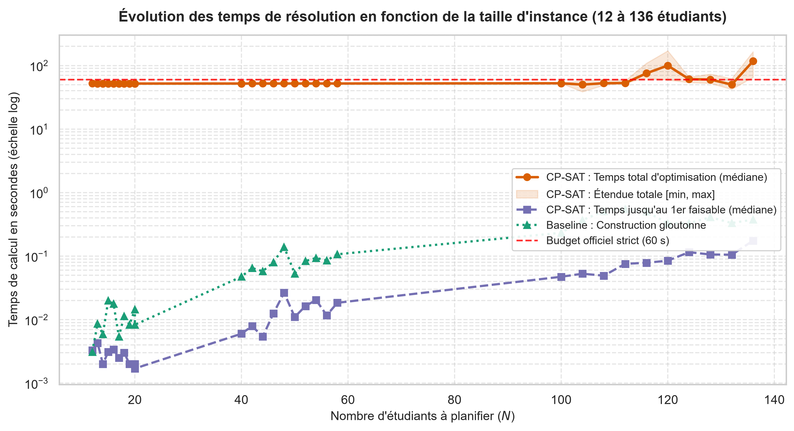
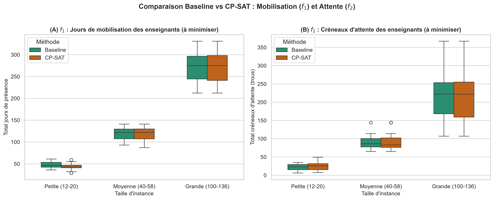
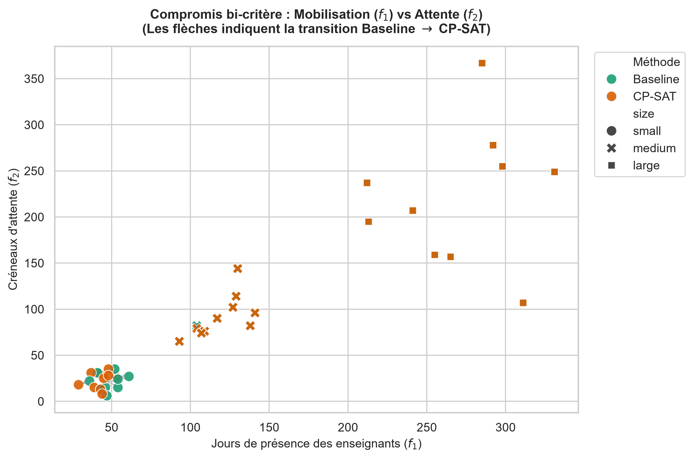

Modélisation Mathématique, Algorithme Glouton de Référence et Optimisation Booléenne CP-SAT
eligible_final), en salle physique.| Critère | Signification Métier | Règle de Calcul | Priorité |
|---|---|---|---|
| $f_1$ : Mobilisation | Jours de présence des enseignants | Somme des jours avec $\ge 1$ séance par enseignant | Élevée |
| $f_2$ : Attente | Trous d'inactivité dans la journée | Dernier créneau - Premier créneau + 1 - Nb séances | Moyenne |
| $f_3$ : Écart de Charge | Équité entre les enseignants | $\max_{e} \text{Load}(e) - \min_{e} \text{Load}(e)$ | Souple |
| $f_4$ : Ruptures Encadrant | Continuité des séries d'étudiants d'un superviseur | Nombre de blocs de créneaux non contigus par encadrant | Élevée |
| $f_5$ : Paires Jurys | Réutilisation des couples $(P, E)$ | Nombre de paires ordonnées distinctes sur l'instance | Souple |
Binarisation intégrale sans Big-M :
threads = 1 (monocœur garanti).validator.py.| Taille | Critère Analysé | Baseline Médiane | CP-SAT Médiane | Gain Relatif (%) | Observation Métier |
|---|---|---|---|---|---|
| Petite (12-20 ét.) |
$f_1$ (Mobilisation) | 46.5 | 43.5 | +6.5% | Moins de jours de déplacement requis |
| $f_4$ (Ruptures séries) | 14.0 | 10.0 | +28.6% | Séries d'étudiants beaucoup plus compactes | |
| $f_2$ (Attente) | 23.0 | 25.5 | -10.9% | Léger compromis dû au regroupement sur moins de jours | |
| Moyenne (40-58 ét.) |
$f_4$ (Ruptures séries) | 44.0 | 43.5 | +1.1% | Améliorations ciblées par seed |
| $f_5$ (Paires jurys) | 40.0 | 39.5 | +1.2% | Mutualisation des binômes (Président, Examinateur) | |
| Grande (100-136) |
Tous critères | CP-SAT stabilise et certifie la solution Baseline dans le budget de 60 s | Sécurité absolue de faisabilité (100%) | ||

La Baseline s'exécute en une fraction de seconde (< 0.4s). CP-SAT trouve une solution admissible en < 0.1s puis exploite les 60s pour l'amélioration.


Chaque flèche représente le gain obtenu en passant de la Baseline à CP-SAT.
small_03 (Visualiseur)large_08 (Scalabilité)Projet mené en collaboration équilibrée : modélisation mathématique rigoureuse, implémentation de la Baseline gloutonne, formulation CP-SAT avec élimination de Big-M, chaîne de validation automatisée (180 runs), visualiseur HTML interactif et rédaction scientifique du rapport.
L'alliance d'une heuristique gloutonne rapide et d'un solveur de contraintes moderne CP-SAT garantit à la fois 100% de faisabilité en temps réel et une optimisation mesurable de la qualité de vie académique des enseignants et étudiants.
Place aux questions et à la démonstration sur visualiseur.html.